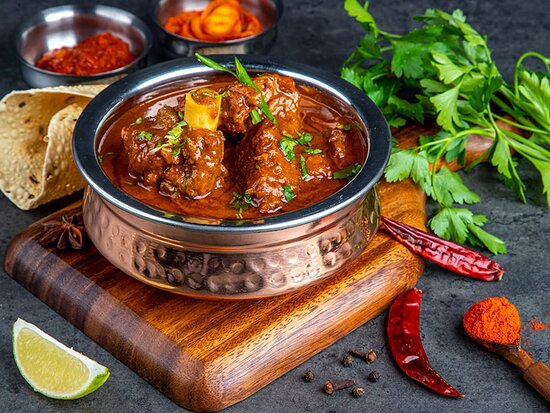

Ingredients for Rogan Josh 🍖
- 500g Mutton (bone-in or boneless, cut into chunks) 🐑
- 2 Onions (finely sliced) 🧅
- 1 tbsp Ginger-Garlic Paste 🧄
- 2-3 Tomatoes (pureed) 🍅
- 1 tbsp Kashmiri Red Chili Powder 🌶️
- 1 tsp Cumin Powder 🌱
- 1 tsp Coriander Powder 🌿
- 1/2 tsp Turmeric Powder ✨
- 1 tsp Garam Masala 🌿✨
- 4-5 Green Cardamom Pods 🌱
- 2-3 Cloves 🌿
- 1 Cinnamon Stick 🍂
- 1/4 tsp Asafoetida (Hing) 🧂
- 1/4 Cup Yogurt (whisked) 🥄
- 1/4 Cup Almond Paste (optional, for richness) 🌰
- 2 tbsp Ghee (clarified butter) 🧈
- 2 tbsp Oil (for cooking) 🍳
- Salt to taste 🧂
- 3-4 Cups Water 💧
- Fresh Coriander for garnish 🌿
Steps 🍴
- Heat oil and ghee in a heavy-bottomed pot over medium heat. Add the cardamom pods, cloves, and cinnamon stick. Let them sizzle for a few seconds to release their fragrance. 🌱🍂🌿
- Add the sliced onions and sauté until they turn golden brown. This caramelizes the onions, which adds sweetness to the curry. 🧅
- Add the ginger-garlic paste and sauté for 2-3 minutes until fragrant. 🧄
- Add the pureed tomatoes and cook until the oil starts to separate from the masala. 🍅
- Now, add the Kashmiri red chili powder, cumin powder, coriander powder, turmeric powder, and garam masala. Stir well and cook the masala for 5 minutes until the spices are well-blended. 🌶️🌱✨
- Add the mutton pieces and brown them on all sides for about 5 minutes. 🐑
- Add whisked yogurt and mix well, ensuring the meat is coated with the yogurt and spices. Cook for another 3-4 minutes. 🥄
- Add water (around 3-4 cups) and bring the curry to a boil. Reduce the heat to low, cover, and let it simmer for 1-1.5 hours, or until the mutton is tender and cooked through. 💧
- If using, add the almond paste to the curry for added richness and cook for another 5 minutes. 🌰
- Once the mutton is tender and the curry has thickened, check the seasoning and adjust salt if needed. Garnish with fresh coriander. 🌿